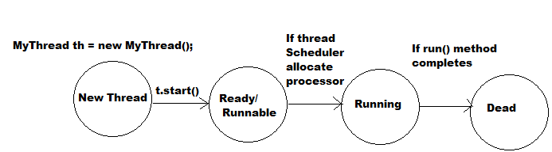

Introduction:
Multitasking:
- Executing several task simultaneously is the concept of Multitasking .
- There are two types of multitasking :
- 1. Process based Multitasking
- 2. Thread based Multitasking
Processed based Multitasking :
- Executing several task simultaneously where each task is a separate independent process, such type of multitasking is called process based multitasking .
- Processed based multitasking is best suitable for Operating System level .
Thread based Multitasking:
- Executing several task simultaneously where each task is a separate independent part of the same program, is called a Thread based Multitasking and each independent part of process is called Thread .
- Thread based multitasking is best suitable at programmatic level .
- Whether it is Process based or Thread based, the main purpose of multitasking id to reduce response time and to improve performance of the system .
- The main important application areas of multithreading are :
- To develop multimedia graphics
- To develop video games
- To develop Animations .
- To develop web and application servers .
- When compared with old languages, java provides in-built support for multithreading by providing API : Thread, ThreadGroup, ThreadLocal, Runnable etc .
- Hence developing multithreading examples in java very easy when compared with old languages .
Defining, Instantiating and Starting a new Thread :
- By extending Thread class .
- By Implementing Runnable interface .
Note: start() method is not a normal method call, it will start a new flow of execution (i.e, new thread)
Thread Schedular :
- If multiple threads are waiting then in which order threads will be executed is decided by Thread Scheduler .
- Thread Scheduler is the part of JVM and we can not except exact behavior of Thread Scheduler .
- Due to this we can not except the order in which threads will be executed and hence we can not except exact output .
Difference between start() and run() method :
- In case of start() method , a new Thread will be created which is responsible for the execution of run() method .
Important of Thread class start() method :
- Thread class start() method is responsible to perform all required activities for thread like registering thread with thread scheduler etc .
After completing all required activities it will invoke run() method .
- Hence without executing Thread class start() method there is no chance of starting a new Thread in java .
Overloading of run() method :
- We can overload run() method, but Thread class start() method always call no-argument run() method only .
- The other overloaded method we have to call explicitly, then it will be executed just like a normal method call .
If we are not overriding run() method :
- If we are not overriding run() method then Thread class run() method will be executed which has empty implementation . Hence we won't get any output .
If we override start() method :
- If we are overriding start() method then it will be executed just like a normal method call by main thread and new Thread won't be created .
Life Cycle of Thread :

Note: After starting a thread, if we are trying to restart same thread once again we will get runtime exception saying : IllegalThreadStateException .
Define a Thread by implementing Runnable interface :
- We can define a Thread even by implementing Runnable interface directly .
- Runnable interface present in java.lang package and it contains only one method .
- We can not except exact output for the above program, but several possible outputs we can provide .
Recommended way to define a Thread :
- Among two ways of defining a Thread, implements Runnable approach is recommended to use .
- In the first approach, our base class always extending Thread class and hence there is no chance of extending any other class . So that we will miss inheritance benefits .
- But in case of second approach, while implementing Runnable interface, we can extend any other class and hence won't miss any inheritance benefits .
- Because of above reason implements Runnable approach is recommended to define a Thread .
Thread class constructor :
- Thread t = new Thread()
- Thread t = new Thread(Runnable r)
- Thread t = new Thread(String name)
- Thread t = new Thread(Runnable r, String name)
- Thread t = new Thread(ThreadGroup g, String name)
- Thread t = new Thread(ThreadGroup g, Runnable r)
- Thread t = new Thread(ThreadGroup g, Runnable r, String name)
- Thread t = new Thread(ThreadGroup g, Runnable r, String name, long stacksize)